탄소중립 생활 실천 5대 분야
carbon Neutral
신중한 소비로
건강한 지구로
건강한 지구로
친환경 소비
전원은 끄고 실천은 켜자!
에너지 절약
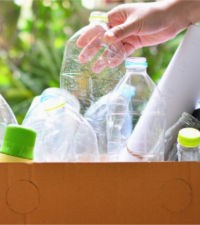
쏙쏙 비우고
꼭꼭 분리하자
꼭꼭 분리하자
자연 순환
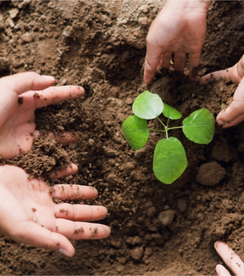

숲은 아껴주고
나무는 심어주고
나무는 심어주고
흡수원 보호
지구도 튼튼
나도 튼튼
나도 튼튼
친환경 이동
Agriculture
Farming Products
Farming Products

녹색지구를 위한
첫 걸음,
온실가스 감축
첫 걸음,
온실가스 감축
온실가스 배출이란
무엇인가요?
무엇인가요?
특정 가스가 지구 대기로 방출되면 열이 갇히고 지구 온도가 상승하는
'온실 효과'가 발생할 수 있습니다. 배출은 자연적 원인으로 인해
발생할 수 있지만 주로 인간 활동, 특히 에너지 및 운송을 위한 화석 연료의
연소의 결과입니다.
CO
2
Greenhouse Gas
온실가스 배출량 증가
산업 혁명 이후 인간의 활동으로 인해 대기 중 온실가스 배출량이 크게
증가했습니다.
기후변화 주요 원인
온실가스 배출은 수세기 동안 지속되면서 지구 온도를 상승시켜 지구 기후
변화의 주요 원인으로 작용합니다.
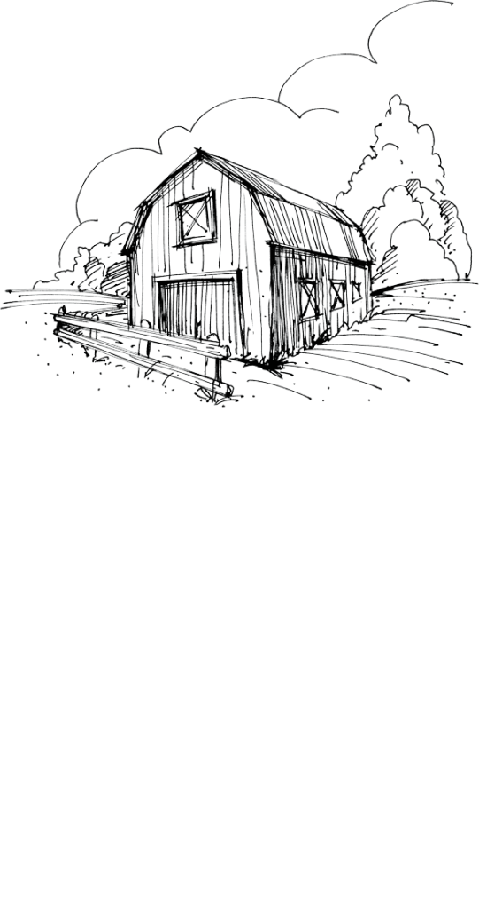
온실가스는 어디에서
배출되나요?
배출되나요?
where?
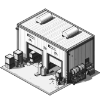
화석연료 연소
fossil fuel combustion
인류가 배출하는 온실가스의 약 75%는 석탄, 석유, 천연가스 같은 화석
연료의 연소에서 발생합니다. 에너지 생산과 운송 과정에서 대량의
CO2가 대기로 방출되며, 특히 휘발유와 경유로 구동되는 자동차 및
기타 차량이 주요 원인입니다.
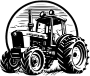
농업
agriculture
가축, 특히 젖소는 소화 과정에서 CH4를 생산하고 이는 대기 중으로
방출됩니다. 육류 생산을 위해 대규모 가축을 사육할 경우, 집단적으로
배출되는 CH4의 양은 상당할 수 있습니다. 또한 논은 경작 중에 CH4를
배출합니다.
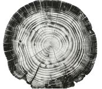
삼림 벌채
deforestation
숲은 중요한 탄소 흡수원으로, CO2를 대기 밖으로 끌어냅니다. 숲이
벌목되거나 불에 타면 나무는 저장했던 탄소를 다시 방출합니다.
농산물에 대한 수요는 종종 삼림 벌채를 유발하며, 이는 환금 작물과 가축 목축을 위한 토지 개간으로 이어집니다.
농산물에 대한 수요는 종종 삼림 벌채를 유발하며, 이는 환금 작물과 가축 목축을 위한 토지 개간으로 이어집니다.
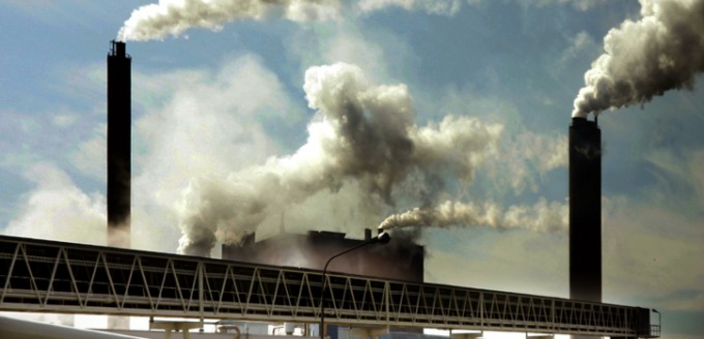
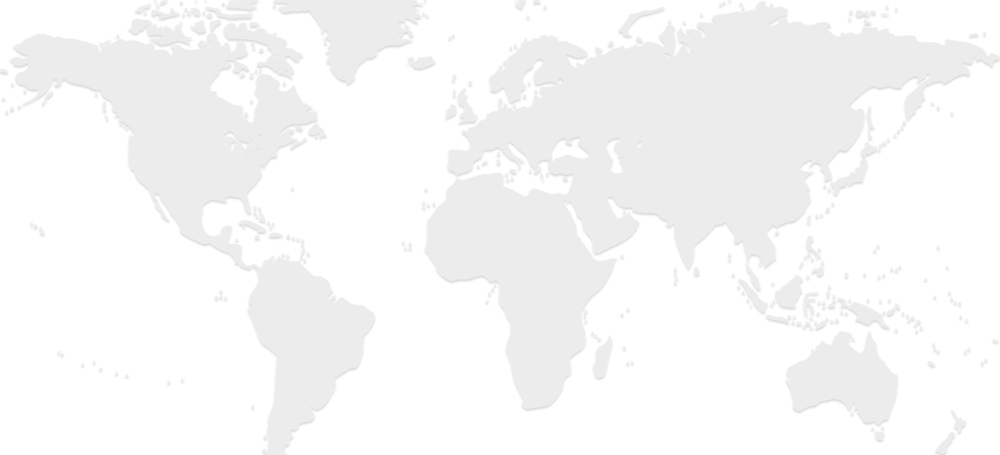
온실가스, 얼마나
배출되었을까요?
배출되었을까요?
한국의 온실가스 배출량은 교토의정서에서 온실가스 감축 기준 연도로
설정한 1990년 2억 9,210만 톤에서 2021년 6억 7,660만 톤으로 132%
증가하였다. 이 기간 동안 온실가스 배출량 증가율은 연평균 2.7%를
기록하였습니다.
How Much?
전세계 대한민국
온실가스 배출 순위
온실가스 배출 순위
1990년부터 2020년까지의 전 세계 온실가스 배출량 통계에서 대한민국은
빠르게 증가하는 경제 성장과 산업화로 인해 상위권에 위치했습니다.
2000년대 이후 급격한 산업 발전과 에너지 소비 증가로 배출량이 상승하며 주요 배출국 중 하나로 자리잡았습니다. 2020년 기준 대한민국은 세계 온실가스 배출량 상위 10위권 내에 속하는 경우가 많으며, 이는 제조업 중심의 경제 구조와 화석 연료 의존도가 큰 영향을 미쳤습니다.
2000년대 이후 급격한 산업 발전과 에너지 소비 증가로 배출량이 상승하며 주요 배출국 중 하나로 자리잡았습니다. 2020년 기준 대한민국은 세계 온실가스 배출량 상위 10위권 내에 속하는 경우가 많으며, 이는 제조업 중심의 경제 구조와 화석 연료 의존도가 큰 영향을 미쳤습니다.
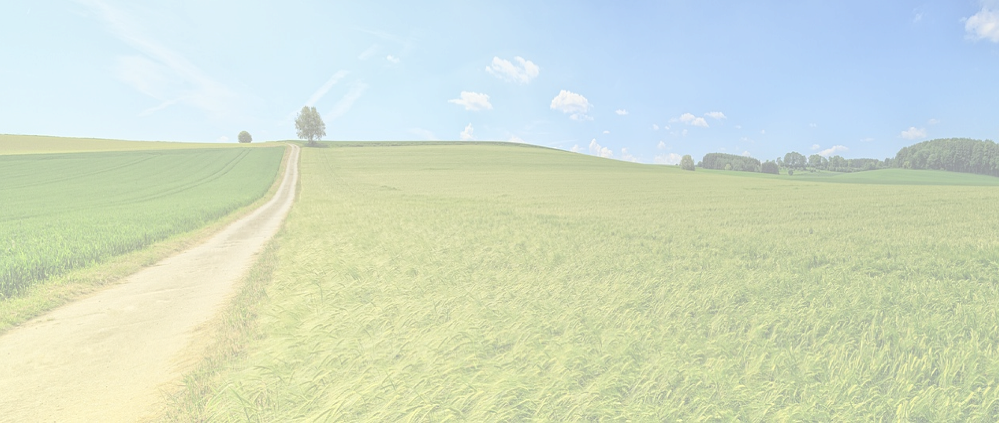
탄소중립은 배출되는 온실가스를 상쇄하거나 제거함으로써 기후변화를
완화하는 데 핵심적인 역할을 합니다. 개인과 사회가 함께 에너지 절약, 재생
가능 에너지 사용, 저탄소 소비를 실천하면 지구의 지속 가능성을 확보하고
미래 세대를 위한 환경을 보전할 수 있습니다.
2020년 대한민국
온실가스 총 배출량
온실가스 총 배출량
탄소중립 생활 실천!
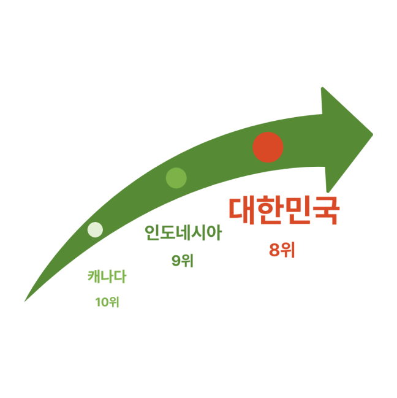
함께해요! 12월 챌린지
Challenge
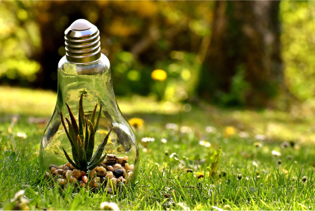
카본페이 다운로드 받고,
녹색생활 실천 가입해요!
녹색생활 실천 가입해요!
더보기
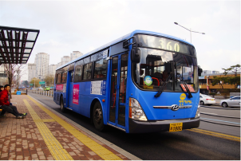
2024.10
대중교통 이용하고 일상 속에서 탄소중립을 실천합니다.
더보기
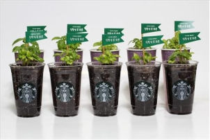
2024.11
작은 식물을 키워요. 수경재배로 뿌리를 내렸으니 곧 화분에...
더보기
656 백만톤 CO
2
eq.
에너지 86.8%
산업공정
7.4
7.4
농업
3.2%
3.2%
폐기물
2.5%
2.5%


carbon neutral
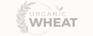
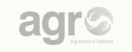
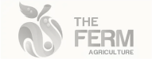
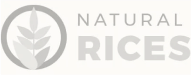
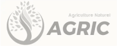
What?
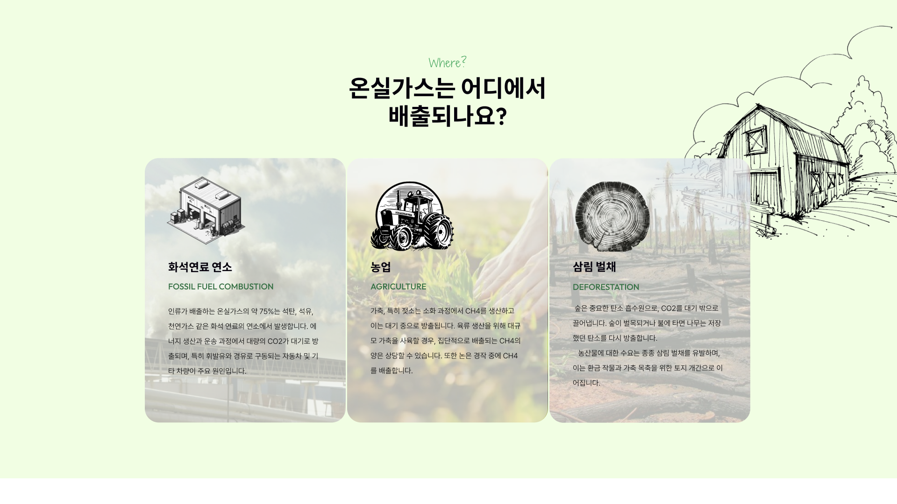